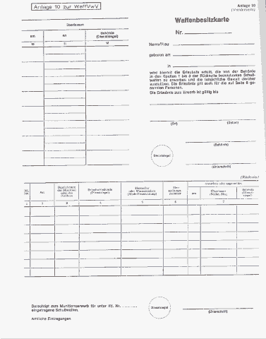

In der Bundesrepublik Deutschland legal an eine Waffe zu kommen, ist ziemlich schwer
und daher m.E. als Option
zu vernachlässigen. Für denjenigen, der sich doch etwas für Waffenrecht interessiert,
habe ich hier die wichtigsten Punkte zusammengestellt.
Um in den Besitz von Waffen zu kommen, benötigt man zunächst eine
sogenannte Waffenbesitzkarte. Diese
sieht so aus:

Die entsprechenden Vorschriften zu diesem Schein sind im § 28 des Waffengesetz (WaffG) geregelt:
(l) Wer Schußwaffen erwerben und die tatsächliche Gewalt über sie ausüben will, bedarf der Erlaubnis der zuständigen Behörde. Die Erlaubnis wird durch eine Waffenbesitzkarte erteilt; sie ist auf eine bestimmte Art und Anzahl von Schußwaffen auszustellen. Die Erlaubnis zum Erwerb gilt für die Dauer eines Jahres. Die Erlaubnis zur Ausübung der tatsächlichen Gewalt wird unbefristet erteilt. Sie kann zur Abwehr von Gefahren für die öffentliche Sicherheit befristet und mit Auflagen, insbesondere hinsichtlich der Aufbewahrung der Schußwaffen, verbunden werden; nachträgliche Auflagen sind zulässig.
(2) Sportschützen wird eine unbefristete Erlaubnis erteilt, die allgemein zum Erwerb von Einzelladerwaffen mit einer Länge von mehr als 60 cm berechtigt. Waffensammlern sowie Personen, denen Schußwaffen zur Erprobung, Begutachtung, Untersuchung oder für ähnliche Zwecke überlassen werden, kann die Erlaubnis zum Erwerb von Schußwaffen unbefristet und für bestimmte Arten von Schußwaffen, in begründeten Ausnahmefällen unbefristet für Schußwaffen jeder Art, erteilt werden. Absatz I Satz 5 gilt entsprechend für die Erteilung von Auflagen. Die Waffensammlern erteilte Erlaubnis ist mit der Auflage zu verbinden, mindestens einmal jährlich der zuständigen Behörde eine Aufstellung über den Bestand an Schußwaffen vorzulegen.
(3) Einer Erlaubnis nach Absatz I bedarf es nicht zum Erwerb von Schußapparaten und Einsteckläufen und zur Ausübung der tatsächlichen Gewalt über sie.
(4) Einer Erlaubnis nach Absatz I bedarf nicht, wer eine Schußwaffe
1. von Todes wegen erwirbt,
2. durch Fund lt. 965 Abs. I des Bürgerlichen Gesetzbuches) erwirbt, sofern er die Waffe unverzüglich dem Verlierer, dem Eigentümer, einem sonstigen Erwerbsberechtigten oder der für die Entgegennahme der Fundanzeige zuständigen Stelle abliefert,
3. von einem Berechtigten vorübergehend zum Zwecke der sicheren Verwahrung oder der nicht gewerbsmäßigen Beförderung zu einem Berechtigten erwirbt,
4. von einem anderen wiedererwirbt, dem er sie vorübergehend überlassen hat, ohne daß es hierfür einer Eintragung in die Waffenbesitzkarte bedurfte,
5. von einem anderen oder für einen anderen Berechtigten erwirbt, wenn und solange er
die Weisungen des anderen über die Ausübung der tatsächlichen Gewalt Über die
SchuBwaffe auf Grund eines gerichtlichen oder behördlichen Auftrags oder eines
Arbeitsverhältnisses oder
als Beauftragter einer jagdlichen oder schießsportlichen Vereinigung oder einer Vereini-
gung, bei der es Brauch ist, aus besonderem Anlaß Schußwaffen zu tragen, zu befolgen
hat,
6. auf einer Schießstätte (§ 44) lediglich vorübergehend zum Schießen auf der Schießstätte erwirbt,
7. als Inhaber eines Jahresjagdscheines, Tagesjagdscheines oder Jugendjagdscheines
(§§ 15,
16 des Bundesjagdgesetzes) erwirbt, sofern es sich um eine Schußwaffe mit einer Länge
von mehr als 60 cm handelt, ausgenommen Selbstladewaffen, deren Magazin mehr als
zwei Patronen aufnehmen kann,
8. lediglich zur gewerbsmäßigen Beförderung oder gewerbsmäßigen Lagerung erwirbt; der gewerbsmäßigen Beförderung steht die Beförderung durch Eisenbahnen des öffentlichen Verkehrs oder durch die Post gleich,
9. nach dem Abhandenkommen wiedererwirbt,
10. als Gerichtsvollzieher oder Vollziehungsbeamter in einem Vollstreckungsverfahren erwirbt.
(5) In den Fällen des Absatzes 4 Nr. 1, 7 und 9 hat der Erwerber binnen eines Monats die Ausstellung einer Waffenbesitzkarte oder die Eintragung der Waffe in eine bereits erteilte Waffenbesitzkarte zu beantragen, sofern er die Schußwaffe nicht vorher einem Berechtigten überläßt. Im Falle des Absatzes 4 Nr. I beginnt die Frist des Satzes I mit der Annahme des Erwerbs oder mit Ablauf der für die Ausschlagung vorgeschriebenen Frist. In den Fällen des Absatzes 4 Nr. 2 bis 6, 8 und 10 und in den Fällen des § 27 Abs. 2 und 3 darf die tatsächliche Gewalt über die Schußwaffe ohne Erlaubnis nach Absatz I ausgeübt werden.
(6) Eine Waffenbesitzkarte über Schußwaffen, über die mehrere Personen die tatsächliche Gewalt ausüben, kann auf diese Personen ausgestellt werden.
(7) Wer eine Schußwaffe auf Grund einer Erlaubnis nach Absatz I erwirbt, hat binnen zwei Wochen der zuständigen Behörde den Erwerb schriftlich anzuzeigen und seine Waffenbesitzkarte zur Eintragung des Erwerbs vorzulegen. Dies gilt nicht in den Fällen des Absatzes 2 Satz 2, in denen die Waffenbesitzkarte auf Schußwaffen jeder Art ausgestellt worden ist und die tatsächliche Gewalt über die Schußwaffen nicht länger als drei Monate ausgeübt wird.
(8) Ist eine Schußwaffe, zu deren Erwerb es ihrer Art nach der Erlaubnis bedarf, nicht
mit einer fortlaufenden Nummer (§ 13 Abs. 1 Nr. 3) gekennzeichnet, so kann die
zuständige Behörde - auch nachträglich - anordnen, daß der Erwerber ein bestimmtes
Kennzeichen anbringen läßt.